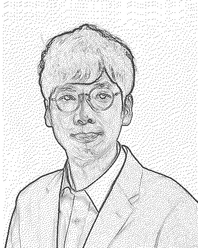

はじめに
ガイドタイプ
- 進め方の整理と手順のご案内
- 必要書類や確認事項のアドバイス
- ご自身で動くための実務ガイド
- 事前予約制のweb会議でご案内
無料
ご自身で全て実施したい方向け
「相続、何から手をつければいいかわからない」
「役所などを何度も回る、時間も体力もない」
「誰に相談すればいいのかわからない」
「期限までに対応できない、時間がない
「そろそろ備えたい（お金のこと、自分のこと）」
「費用がどのくらいかかるのか心配」
まずやるべきことガイド
ご依頼の前に、まず知っておいていただきたいことがあります
相続が発生したら、まずやるべき5つのこと（一般的な目安です。個別の状況により異なりますので、詳しくはチャットでご相談ください）
チャットでのやりとりは、ゆっくりと日を跨いで何度でもやりとりでできます同じ端末・ブラウザであれば、数ヶ月程度は会話の続きからご相談いただけます（ご利用環境により異なります）。
依頼はいりません。まずはご自身でできるやり方を提案します
まずは3つの質問で、費用の目安をチェックできます
各カードをクリックすると詳しい内容をご確認いただけます
現在からご逝去後まで幅広い業務に対応
お客様に選ばれる理由
依頼はいりません。チャットでご相談いただければ、できる限りガイドいたします。
メールやチャット、web会議などを利用して、すべての対応をなるべくご自宅で完結できるようにいたします。
経験豊富な専門家がお客様をサポート

社会人になってから経営学修士（MBA）を取得し、東証プライム企業子会社の代表取締役（CEO）として経営の最前線に立ってきました。また、他社の社外CIO（最高情報責任者）として、IT戦略の策定や自らシステム開発にも携わる中、事業承継の重要性を強く感じ、行政書士として終活や事業承継のサポートに取り組んでいます。行政書士業務は兼業で行なっており、一件一件を丁寧にご対応するため業務数を制限しながら取り組んでいます。「お客様の立場に立ち、安心できるサポート」をモットーに、人生の大切な節目を支えるお手伝いをいたします。
当事務所は仲介業者ではありません。ご依頼いただいた案件は、資格を持つ代表の鈴木本人が、初回のご相談から書類のお渡しまで直接対応します。
一方で、全国に多数の拠点を持つ大手ネットワークでの対応や、複数の事務所から一括で見積りを取って比較したいというご希望には、他のサービスの方が向いている場合もあります。当事務所は兼業のため受任件数を絞っており、一件一件丁寧に対応することを大切にしています。
初回相談から完了まで、安心のサポート体制
お悩みをお聞かせください
状況を詳しく確認いたします
費用をご提示し、ご納得いただけましたらご契約
必要書類の作成・取得を代行
手続き完了後、書類をお渡し
初回相談無料・宮城県仙台市名取市全域対応
お電話やメールの前に、チャットでの連絡が便利です。
ブラウザを閉じても履歴が残り残るため、時間をかけて現状の整理ができます。
ぜひご検討ください。
直接のご連絡をご希望の場合はこちらからメールをお送りください。
入力不要、アプリ起動後の「メール送信」の２タップのみでお申し込み完了です